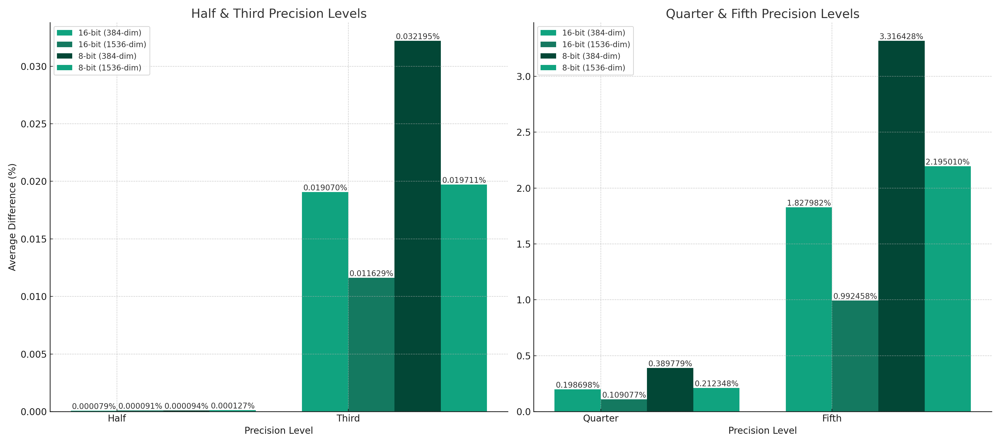

Experiment Outline
Question: How does reducing the precision of vector components to various extents (half, third, quarter, fifth) using different methods (toFixed, Math.round) affect the cosine similarity between two vectors?
Hypothesis: Reducing the precision of vectors will alter the cosine similarity, with more significant reductions leading to larger differences. The method of precision reduction might not significantly impact the cosine similarity.
Experiment Design:
-
Control Group: Compute cosine similarity between two original vectors.
-
Variable Groups: For each level of precision reduction (half, third, quarter, fifth) and for each method of precision reduction (
toFixed,Math.round), compute cosine similarity between precision-reduced vectors. -
Measurement: Compare the cosine similarities across different levels of precision reduction and methods.
Data Collection: Implement JavaScript code to calculate cosine similarities in each case and run multiple iterations to average the results.
Analysis: Evaluate how different levels and methods of precision reduction impact the cosine similarity value.
Code Specification
Functions for Cosine Similarity and Vector Generation: Functions to compute the dot product, magnitude, cosine similarity, and generate random vectors with specific bit-depth and dimensions.
Functions for Precision Reduction:
-
Two functions to reduce precision: one using
toFixedand another usingMath.round. -
Apply these functions to vectors with varying degrees of precision reduction (half, third, quarter, fifth).
Implementation Considerations:
-
Use ES2020 standards.
-
Focus on readability and performance optimization.
-
Adapt the code to handle vectors of different dimensions (384 and 1536) and bit-depths (16-bit and 8-bit).
Function for Averaging Differences: A function to calculate the average difference in cosine similarity over multiple iterations for each precision reduction level and method.
Execution of Experiment: Run the experiment with 1000 iterations for each combination of vector type, dimension, and precision reduction method.
Interpretation of Results
The results of this experiment will help understand the extent to which precision reduction affects the similarity of high-dimensional vectors. This is particularly relevant in applications like data compression or optimization in machine learning, where a balance between precision and computational efficiency is often sought. The findings indicate that while precision reduction does impact cosine similarity, the effects are relatively minor, even with significant reductions. This suggests potential flexibility in the precision of vector representations in certain applications, without substantially compromising their comparative similarity.

Checkout the full code on Github.
node embeddings/precision-reduction-impact-on-cosine-similarity.js
Results
Average differences for 16-bit vectors (384-dim): {
precision_half_to_fixed: '0.0000007919%',
precision_half_math_round: '0.0000007919%',
precision_third_to_fixed: '0.0001907019%',
precision_third_math_round: '0.0001907019%',
precision_quarter_to_fixed: '0.0019869799%',
precision_quarter_math_round: '0.0019869799%',
precision_fifth_to_fixed: '0.0182798241%',
precision_fifth_math_round: '0.0182798241%'
}
Average differences for 16-bit vectors (1536-dim): {
precision_half_to_fixed: '0.0000009126%',
precision_half_math_round: '0.0000009126%',
precision_third_to_fixed: '0.0001162906%',
precision_third_math_round: '0.0001162906%',
precision_quarter_to_fixed: '0.0010907664%',
precision_quarter_math_round: '0.0010907664%',
precision_fifth_to_fixed: '0.0099245784%',
precision_fifth_math_round: '0.0099245784%'
}
Average differences for 8-bit vectors (384-dim): {
precision_half_to_fixed: '0.0000009423%',
precision_half_math_round: '0.0000009423%',
precision_third_to_fixed: '0.0003219478%',
precision_third_math_round: '0.0003219478%',
precision_quarter_to_fixed: '0.0038977933%',
precision_quarter_math_round: '0.0038977933%',
precision_fifth_to_fixed: '0.0331642817%',
precision_fifth_math_round: '0.0331642817%'
}
Average differences for 8-bit vectors (1536-dim): {
precision_half_to_fixed: '0.0000012704%',
precision_half_math_round: '0.0000012704%',
precision_third_to_fixed: '0.0001971148%',
precision_third_math_round: '0.0001971148%',
precision_quarter_to_fixed: '0.0021234765%',
precision_quarter_math_round: '0.0021234765%',
precision_fifth_to_fixed: '0.0219500987%',
precision_fifth_math_round: '0.0219500987%'
}
The experiment results show the average difference in cosine similarity between the original and precision-reduced vectors, for different methods of precision reduction (toFixed and Math.round) and for varying degrees of precision reduction (half, third, quarter, fifth). The experiment was conducted on two types of vectors: 16-bit and 8-bit, with two different dimensions (384 and 1536).
Key Observations
Impact of Precision Reduction:
-
As the precision reduction becomes more aggressive (from half to fifth), the average difference in cosine similarity increases. This indicates that the loss of precision generally has a more pronounced effect as more decimal points are removed.
-
Even at the most aggressive level of precision reduction (to a fifth), the change in cosine similarity is relatively small, in the order of hundredths of a percent.
Comparison of Reduction Methods:
- There is no noticeable difference between the
toFixedandMath.roundmethods in terms of their impact on cosine similarity. This suggests that both methods of rounding have a similar effect on the precision of the vectors and their resulting cosine similarities.
Effect of Vector Dimensionality:
- The dimensionality of the vectors (384 vs. 1536) seems to have a minor impact on the results. The pattern of increasing differences with more aggressive precision reductions holds in both cases, though the exact values differ slightly.
16-bit vs. 8-bit Vectors:
- There’s a consistent trend across both types of vectors. The differences are very small, but consistently, 8-bit vectors show a slightly higher difference in cosine similarity compared to 16-bit vectors when the precision is reduced. This could be due to the lower initial precision of the 8-bit vectors, which makes further precision reduction more impactful.
Interpretation
The experiment’s results suggest that reducing the precision of vectors has a measurable but minor impact on their cosine similarity. This impact becomes slightly more pronounced as the degree of precision reduction increases, but even the most significant changes are relatively small. The method of precision reduction (rounding vs. truncating) does not appear to significantly affect the results.
These findings could have practical implications in applications that utilize vector embeddings, where high-dimensional vectors are used to represent complex data. The results suggest that it’s possible to reduce the precision of these vectors (for instance, for storage or computation efficiency) with only a minimal impact on their comparative similarity. However, the degree to which precision can be reduced without significantly affecting the results will depend on the specific requirements and tolerances of the application.